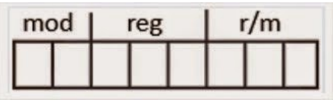

I-8086.
Los modos de direccionamiento del 8086 (Crawford & Gelsinger, 1987) son muy
irregulares. Los registros del procesador, se usan para contener los datos con que se está
trabajando puesto que el acceso a los registros es mucho más rápido que los accesos a
memoria. Se pueden realizar operaciones aritméticas y lógicas, comparaciones, entre
otras.
Hay un campo para un registro (reg), que especifica uno de los operandos, y otros dos
campos (mod y r/m) para el otro.

Motorola 68000
En el Motorola 68000 el mismo direccionamiento lleva implícito el tipo de registro
sobre el que trabaja (direcciones o datos). Está basado en dos bancos de 8 registros de 32
bits. Un banco es de datos (Dn) y el otro de punteros (An). Además contiene un contador
de programa de 32 bits y un registro de estado de 16 bits. Los registros de datos (D0 a
D7) se pueden usar como registros de 32 bits (.l), 16 bits (.w) y 8 bits (.b). Cualquiera de
ellos puede usarse como acumulador, índice o puntero.
Procesador I3
Un modo de direccionamiento especifico la forma de calcular la dirección de memoria
efectiva de un operando usando información contenida en registros, constantes o una
instrucción de la maquina o en otra parte.